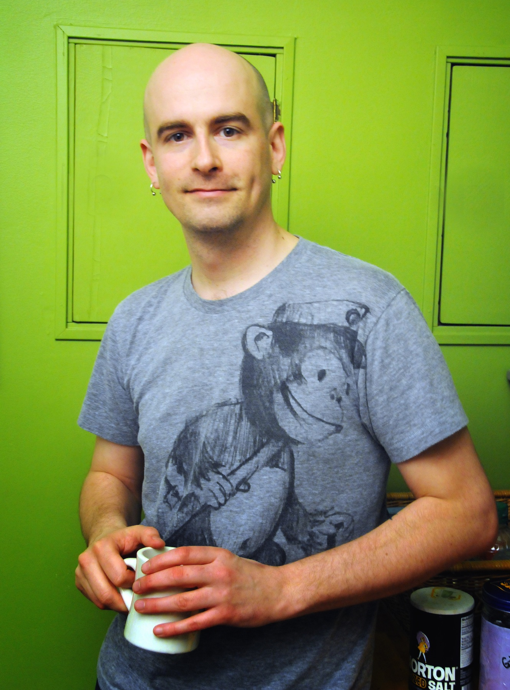

Jacob Sayles

Bio
Jacob Sayles started Office Nomads in Seattle in 2007 with business partner Susan Dorsch.
Office Nomads is a coworking community dedicated to cultivating a dynamic, creative and
collaborative environment for Seattle's nomadic workforce. In 2009 he cofounded
Coworking Seattle, now The Seattle Collaborative Space Alliance, which explores the
wider coworking movement in a local setting. In 2010 he gave the opening speech at
Coworking Europe, the first international coworking conference. In early 2012 he founded
Open Coworking, a non-profit dedicated to promoting and facilitating greater collaboration
between coworking spaces around the world by supporting projects that demonstrate and
emphasize the core coworking values of collaboration, openness, community, accessibility,
and sustainability.
Jacob loves nothing more than acting as a coworking ambassador, both internationally and
locally. It allows him to combine his love of travel with his passion for coworking. He
has visited spaces all over the world, forging connections and sharing experiences with
each coworking community.
Links
- Office Nomads
- Open Coworking
- Coworking Wiki Project
- Seattle Collaborative Space Alliance
- Twitter
- Facebook
- Biznik
- LinkedIn
Recent Tweets
No updates
jsayles [at] gmail [dot] com